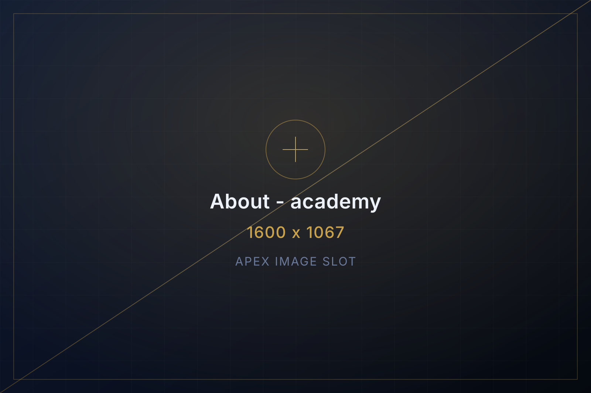
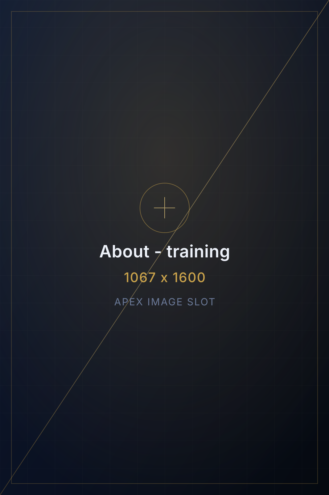

PRINCIPLE 01
Name the role first
A programme is only defined once we can say what work it prepares you for. The role list comes before the module list, and it stays visible throughout.
About the academy
Apex Professional Academy operates under Apex Institute of Multidisciplinary Professional Studies, short code AIMPS. We offer sector-focused professional training programmes designed to develop practical knowledge, workplace skills, professional competencies and career readiness across diverse industries.

Each of the 21 divisions is built around a working environment rather than an academic subject. A metro station, a hotel front desk, a hospital admissions counter and a warehouse floor each have their own routines, documentation and service expectations, and the training follows those.
Every programme publishes the career-oriented roles it trains for. That list is the starting point for our own curriculum decisions, and it is the first thing you see on any programme page.
See the 21 divisionsTraining approach
PRINCIPLE 01
A programme is only defined once we can say what work it prepares you for. The role list comes before the module list, and it stays visible throughout.
PRINCIPLE 02
Training areas are drawn from day-to-day operations: documentation, service handling, safety procedure and the administrative work that surrounds them.
PRINCIPLE 03
Professional communication appears across the register because almost every role in it is customer-facing, colleague-facing or both.
PRINCIPLE 04
We publish what the training covers and what a certificate is. We do not present a course as a job offer, and our compliance statements appear on every relevant page.
Certificates
On completing a programme and meeting the institute's requirements, students receive an Apex course completion certificate naming the programme and its certificate code — for example AATC for the Aviation Division.
Apex Professional Academy clearly distinguishes its own training certificates from government, university, statutory-board or professional-licensing qualifications. Any claim of affiliation, approval, accreditation or recognition is published only when supported by the applicable official authorisation or agreement.
Read the full institute policyThe following are published only once confirmed by the institute. They are deliberately left blank rather than estimated.
